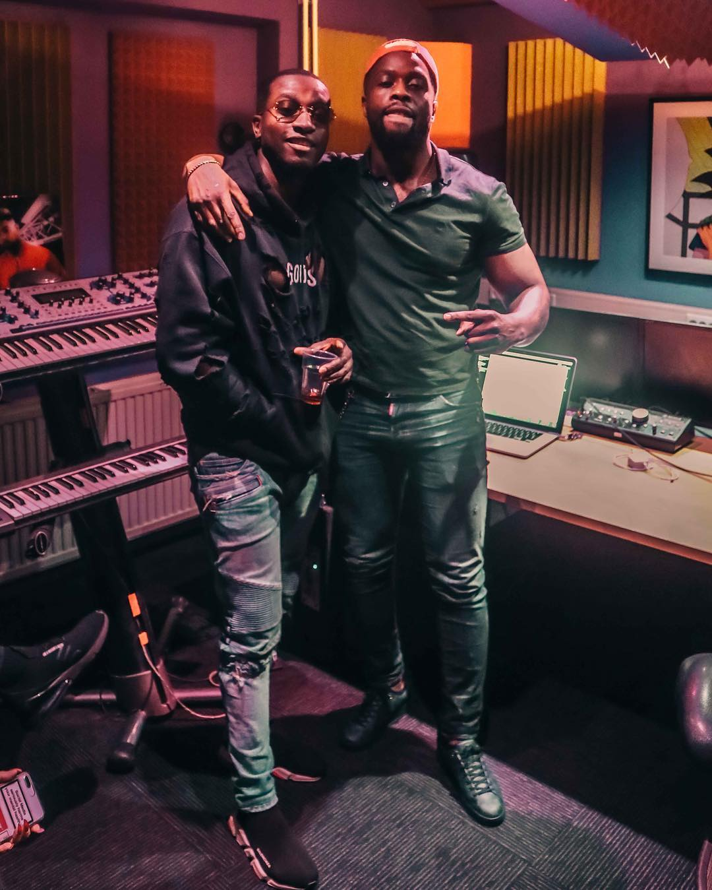
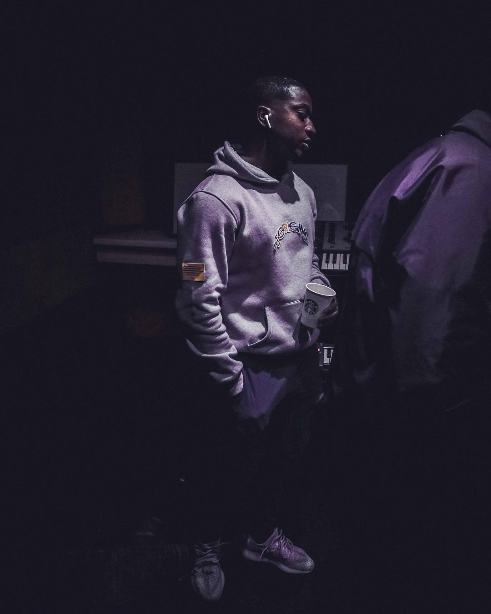

Lang leven de flex 2
Na maanden lang teasen is het eindelijk zo ver. De mannen van De Fellas laten vandaag weten dat hun tweede gezamenlijke album, Lang Leven De Flex 2, op 11 januari zal uitkomen. Op de plaat zullen uiteraard bijdrages te horen zijn van Eves Laurent, Frsh, Brasco, Geechi, Spens, Getit, Teflon en Blow. In aanloop naar de plaat presenteren de Amsterdamse rappers een 4-delige docu, waarvan vandaag het eerste deel verschijnt.
Fellas zijn weer hindabuilding bij Rotjoch. De groep bestaande uit Eves Laurent, Frsh, Brasco, Geechi en Spens maken zich op voor hun 2e project. Na “Lang Leven De Flex” met onder andere de singles “Scheuren” en “Splash” maken de heren zich op voor het vervolg “Lang Leven De Flex 2”. De Fellas gingen voor de promotie van het 2e poject langs bij Rotjoch voor een sessie, de enige ontbrekende in de booth is Eves Laurent. Eves Laurent zit momenteel vast wegens een Plofkraak in Duitsland. Free Eves Laurent nog steeds!
bron : https://errday.nl/cultuur/de-fellas-maken-zich-op-voor-lang-leven-de-flex-2-en-gingen-daarom-langs-bij-rotjoch/.
bron : https://www.puna.nl/de-fellas-kondigen-releasedate-lang-leven-de-flex-2-aan/.
 